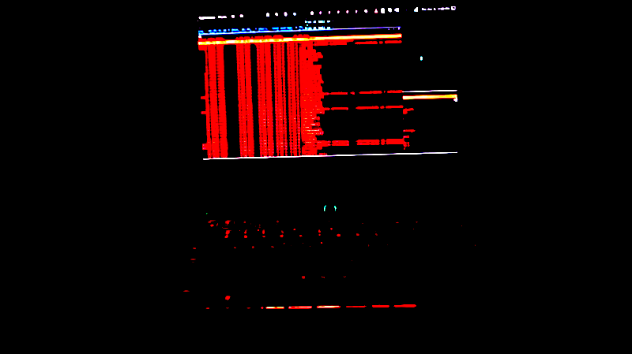
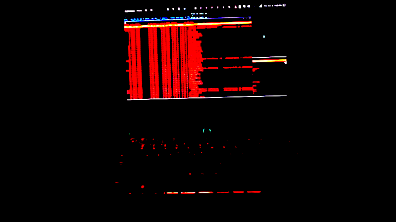
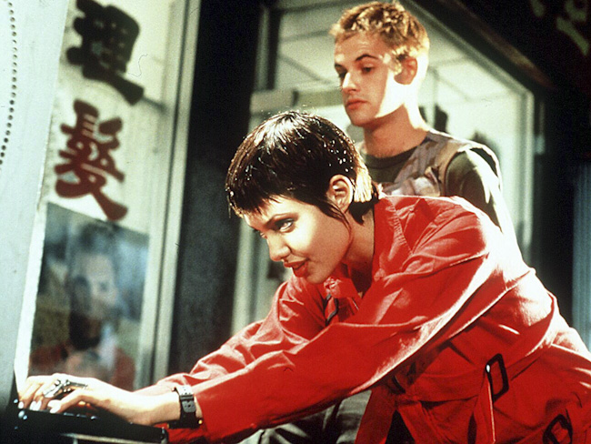

.:: About The Author ::.
 

Also known as The Mentor, Blankenship was a member of a couple of hacker elite groups in the 1980s. Notably the Legion Of Doom, who battled for supremacy online against the Masters Of Deception. However, his biggest claim to fame is that he is the author of the Hacker Manifesto (The Conscience of a Hacker), which he wrote after he was arrested in 1986. The Manifesto states that a hacker's only crime is curiosity and is looked at as not only a moral guide by hackers up to today, but also a cornerstone of hacker philosophy. It was reprinted in Phrack magazine and even made its way into the 1995 film Hackers, which starred Angelina Jolie. Besides this, he is a bit of an enigma.

Hackers Quote: "FYI man, alright. You could sit at home, and do like absolutely nothing, and your name goes through like 17 computers a day. 1984? Yeah right, man. That's a typo. Orwell is here now. He's livin' large. We have no names, man. No names. We are nameless!"- Cereal Killer